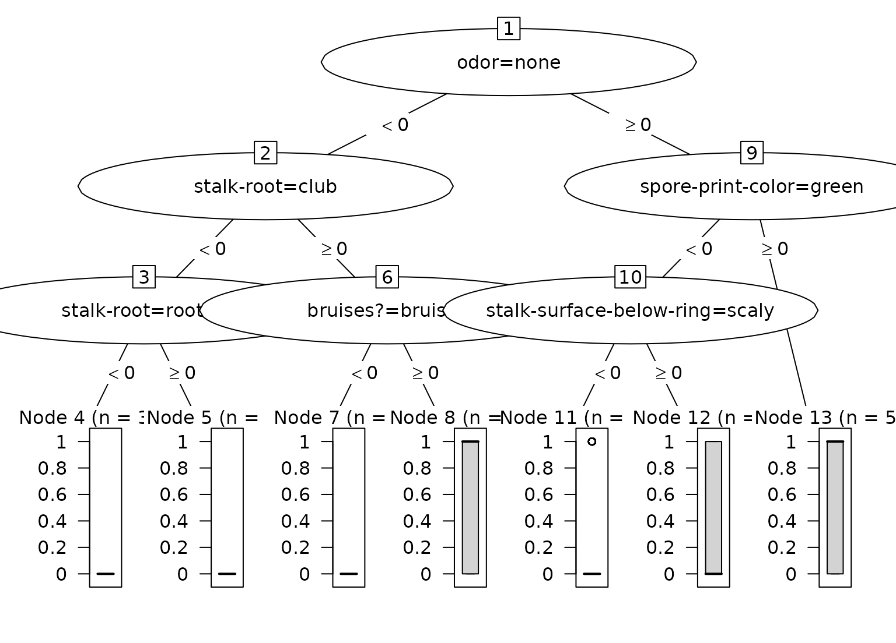

Convert a single tree from a lightgbm boosted tree model to a party object for use with partykit visualization and analysis tools.
Usage
# S3 method for class 'lgb.Booster'
as.party(obj, tree = 1L, data, ...)Arguments
- obj
An
lgb.Boosterobject from the lightgbm package.- tree
Integer specifying which tree to convert (1-based indexing, default is 1). For multiclass models with
num_classclasses andnroundsboosting rounds, there arenum_class * nroundstotal trees.- data
data.frame containing the training data with the response variable included (required). LightGBM models do not store the original training data or response values. You must provide the original data frame that includes both the predictor variables and the response variable.
- ...
Not currently used.
Details
Important note on data
lightgbm models do not store the original training data or response values.
You must provide the original data frame (including the response variable)
via the data parameter for correct terminal node statistics, bar charts,
and other visualizations.
LightGBM tree storage format
lightgbm stores trees in a tabular format accessible via
lightgbm::lgb.model.dt.tree(). Each tree is represented as rows in a table:
tree_index: 0-based tree indexsplit_index: 0-based node ID for internal nodes (NA for leaves)leaf_index: 0-based node ID for leaf nodes (NA for internal)split_feature: Feature name (character) for splitsthreshold: Numeric threshold for splitsdecision_type: Split type ("<=", "==", etc.)left_child: 0-based node ID of left childright_child: 0-based node ID of right childleaf_value: Prediction value for leaf nodesnode_parent: 0-based parent node IDdepth: Depth of node in tree
Node indexing
Internally, lightgbm uses 0-based tree and node indices
User-facing
treeparameter uses 1-based indexing (R convention)When
tree=1is requested, we filter totree_index==0internallyInternal nodes use
split_index, leaf nodes useleaf_index
Split encoding
decision_type "<=": left child when feature <= thresholdright child when feature > threshold
partykit split created with
right = FALSE(left interval closed)
Examples
if (rlang::is_installed("lightgbm")) {
# Binary classification example
data(agaricus.train, package = "lightgbm")
# Prepare data with response column
train_data <- as.data.frame(as.matrix(agaricus.train$data))
train_data$label <- agaricus.train$label
dtrain <- lightgbm::lgb.Dataset(
agaricus.train$data,
label = agaricus.train$label
)
set.seed(7264)
bst <- lightgbm::lgb.train(
params = list(objective = "binary", max_depth = 3),
data = dtrain,
nrounds = 3,
verbose = -1
)
# Convert first tree - data parameter is required
party_tree <- as.party(bst, tree = 1L, data = train_data)
print(party_tree)
plot(party_tree)
# Regression example
data(mtcars)
reg_data <- mtcars
dtrain_reg <- lightgbm::lgb.Dataset(as.matrix(mtcars[, -1]), label = mtcars$mpg)
set.seed(6381)
bst_reg <- lightgbm::lgb.train(
params = list(objective = "regression", max_depth = 3, min_data_in_leaf = 1),
data = dtrain_reg,
nrounds = 3,
verbose = -1
)
party_tree_reg <- as.party(bst_reg, tree = 1L, data = reg_data)
print(party_tree_reg)
}
#>
#> Model formula:
#> ~`odor=none` + `stalk-root=club` + `stalk-root=rooted` + `bruises?=bruises` +
#> `spore-print-color=green` + `stalk-surface-below-ring=scaly` +
#> `odor=musty` + `odor=foul`
#>
#> Fitted party:
#> [1] root
#> | [2] odor=none < 0
#> | | [3] stalk-root=club < 0
#> | | | [4] stalk-root=rooted < 0: 0.000 (n = 3090, err = 0.0)
#> | | | [5] stalk-root=rooted >= 0: 0.000 (n = 158, err = 0.0)
#> | | [6] stalk-root=club >= 0
#> | | | [7] bruises?=bruises < 0: 0.000 (n = 32, err = 0.0)
#> | | | [8] bruises?=bruises >= 0: 0.510 (n = 418, err = 104.5)
#> | [9] odor=none >= 0
#> | | [10] spore-print-color=green < 0
#> | | | [11] stalk-surface-below-ring=scaly < 0: 0.043 (n = 2719, err = 111.1)
#> | | | [12] stalk-surface-below-ring=scaly >= 0: 0.302 (n = 43, err = 9.1)
#> | | [13] spore-print-color=green >= 0: 0.509 (n = 53, err = 13.2)
#>
#> Number of inner nodes: 6
#> Number of terminal nodes: 7

#>
#> Model formula:
#> ~wt + qsec + hp + cyl
#>
#> Fitted party:
#> [1] root
#> | [2] wt < 2.26
#> | | [3] qsec < 19.17
#> | | | [4] wt < 1.885: 30.400 (n = 2, err = 0.0)
#> | | | [5] wt >= 1.885: 26.650 (n = 2, err = 0.8)
#> | | [6] qsec >= 19.17
#> | | | [7] hp < 65.5: 33.900 (n = 1, err = 0.0)
#> | | | [8] hp >= 65.5: 32.400 (n = 1, err = 0.0)
#> | [9] wt >= 2.26
#> | | [10] cyl < 7
#> | | | [11] cyl < 5: 22.580 (n = 5, err = 6.0)
#> | | | [12] cyl >= 5: 19.743 (n = 7, err = 12.7)
#> | | [13] cyl >= 7
#> | | | [14] hp < 192.5: 16.786 (n = 7, err = 16.6)
#> | | | [15] hp >= 192.5: 13.414 (n = 7, err = 28.8)
#>
#> Number of inner nodes: 7
#> Number of terminal nodes: 8